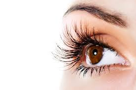
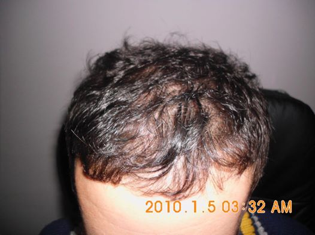
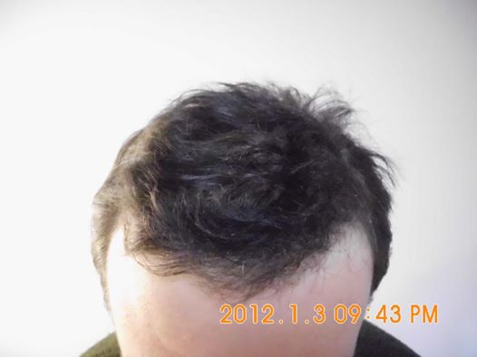

РАСТЕЊЕ НА ТРЕПКИ
Ново и единствено во македонија!
Во Дерма Лукс - РАСТЕЊЕ НА ТРЕПКИ!
Вашите трепки природно ќе се густи и долги. После неколку последователни третмани разликата ќе ве воодушеви. Гарантирано со Америчка технологија од Allergan - Светски гигант во естетската дерматологија. Повелете на бесплатна консултација со Д-р. Адријана, Д-р Сергеј или Л.Т. Оксана.
ЛАСЕРСКА ТЕРАПИЈА ЗА РАСТ НА КОСАТА СО - ЛЛЛТ
 ЛАСЕРСКА ТЕРАПИЈА ЗА РАСТ НА КОСА
Ласерската терапија е најнапреден, најефикасен нехируршки третман против опаѓање на косата. Ласерот делува на целиот фоликул на влакното. Ласерската светлина продира до ниво на главните крвни садови на коренот на влакното, а тоа е не повеќе од 6 мм.
Со овај третман се возобновува циркулацијата на крвта во скалпот со 5 до 6 пати зголемен проток на крв во намалените, стеснати и пресушени крвни садови. Целта на ласерот е да се нормализира циклусот на раст на влакното. Ласерската терапија го поттикнува клеточниот метаболизам, апсорпцијата на нутритиенти и ослободувањето на токсини преку дејство на митохондриите на клетките. Митохондрии се "енергетски фабрики" на клетките, а ласерската светлина директно им предава енергија. На секое пресушено каналче му се враќа првобитната циркулација. Со тоа фоликулата се храни и повторно се раѓа влакно (нежно и тенко...налик на бебешко влакно), кое после три месеци прераснува во задебелено и цврсто влакно.
МЕЗОТЕРАПИЈА НА КОСА
Мезотерапија на скалпИдеална комбинација е со паралелно третирање на скалпот со мезотерапија (еднаш на секои 6 седења под ласер). Мезотерапијата е безбедна, едноставна, научно докажана метода за повторен раст на косата. Се состои во нанесување на специјална канадска формула (одобрена од Канадската Државна Агенција за одобрување на лекови), во средниот слој на скалпот. Со Дерма-Пен се отвараат фоликулите на влакната и се потхрануваат. Ова се постигнува со серија речиси безболни микроинјектирања во поткожното ткиво на скалпот (мезодерм). Со оваа формула се храни и појачува квалитетот на фоликулата на влакното, а со тоа, истото расте подебело и поцврсто. Со одржување на адекватен режим на третмани, се максимизира ефектот од ЛЛЛТ.
Максимално зголемување на растот на косата е до 30% (од 1-от до 90-тиот ден).
Промотивен попуст до 50% на ласерсиот третман за раст на косаБројот на седења под ласер зависи од сложеноста на проблемот. Времетраењето е од 45-60 минути. Првата недела се доаѓа 3 пати, втората 2 пати, третата еднаш итн.
Потребно за да се одржува пораснатата нова коса е: доаѓање еднаш на 3 месеци за мезотерапија, и еднаш месечно седење под ласер.
ТРЕТМАН СО МАТИЧНИ КЛЕТКИ
Третманот со матични клетки од сопственото тело, е дефинитивно новиот Миноксидил на 21 - от век! Факт е дека човечкото тело има способност да реплицира било која клетка внатре во сопственото тело. Дополнително на тоа, матичните клетки сами се генерираат, или имаат способност да создадат идентични копии на самите себе. Во насока на регенерирање на растот на косата, специфични матични клетки во лабораторија се обработуваат во клетки на валкнениот фоликул. Ново регенерираните клетки потоа се трансплантираат во зони на ќелавост на скалпот заменувајќи ги оштетените клетки, и последователно генерирајќи нов раст. Третманот за раст на коса типично користи автологни матични клетки, или масни клетки земени од вашето сопствено тело. PRP (Platelet Rich Plazma), е напредна, нехируршка терапија за природна стимулација на растот на косата. PRP содржи тромбоцити кои можат да предизвикаат раст на влакнените фоликули преку стимулација на матичните клетки (лоцирани во дермалната папила). Со ова се промовира заздравување, регенерација и формирање на нов клеточен раст. Процедурата се состои во земање на крв од клиентот (како за рутинска контрола на крв), се обработува (центрифугира) за да се одвои RPR од останатите примеси на крвта. Под локална анестезија, со специјален систем за мезотерапија се инјектира високо-концентрираната тромбоцитна плазма (PRP) во скалпот топично.
ИМАТЕ ПРАШАЊА? ЈАВЕТЕ СЕ ВЕДНАШ НА ТЕЛЕФОНСКИОТ БРОЈ +38978/223-433
Клиентите кажуваат за ДЕРМА ЛУКС
-

Дерма Лукс ми помогна многу во врска со моите акни и лузни од акни. Пред да започнам со третманите во Дерма Лукс, имав многу ниска самодоверба, не се сликав многу и се плашев да пријдам на било која девојка. Се поради тоа што моето лице беше преполно со акни. верувам дека сликата вреди 1000 зборови...затоа слободно погледнете добро како изгледав порано, а како изгледам сега.
Миле Трендафиловски
-

Derma Lux has helped me too much regarding my acne and acne scars. Before I started going to take treatments at Derma Lux, I had very low self confidence, did not take too much pictures, was afraid to ask any girl out. All because my face was infested with acne. I believe a picture is worth 1000 words... so below feel free to look how I looked before and how I look now.
Миле Трендафиловски
-

Го избрав Дерма Лукс затоа што одлично ги разбираат потребите на клиентите, имаат професионален пристап, квалитетното работење со најнова Канадска технологија и нормални цени. Вистински професионалци со светски манири. Чест ми е да бидам нивни клиент и да соработувам со нив. Благодарност што се тука за мене. Безрезервна препорака за секого.
Цветкоска Ирена
-

Драгоцено 5 годишно искуство со најдобрата дерматолошко-ласерска компанија во регионов. Максимална трпеливост и желба за задоволни клиенти. Искрена препорака за нивните услуги.
Петрушевски Иван